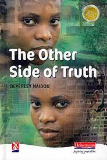
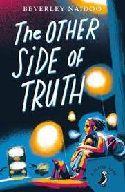

Books available in different designs
The Other Side of Truth is a young adult novel about Nigerian political refugees, written by Beverley Naidoo and published by Puffin in 2000.
It is set in the autumn of 1995 during the reign in Nigeria of the despot General Abacha, who is waging a campaign of suppression against journalists.
 | ISBN Number | Author | Format | Edition | Publisher |
|---|---|---|---|---|
| 9876503452564 | Beverley Naidoo | Book and eBook | 2nd - 2000 | Puffin Publishers |